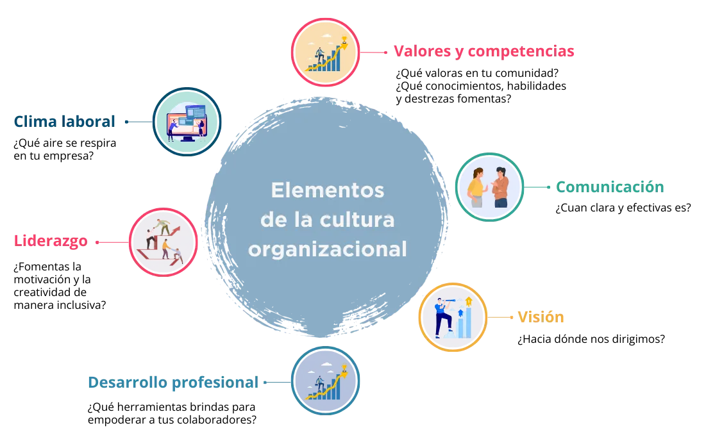

La cultura organizacional permite estructurar de forma clara y eficaz, los valores y filosofía que respaldan los objetivos y acciones detrás de una organización; estos constituyen las bases que determinan el desarrollo de la empresa dentro del mercado, sus acciones sobre el producto o servicio y la manera para direccionar sus decisiones fundamentales sobre la comunicación al interior con sus colaboradores y al exterior con sus clientes. Los clientes pueden inclinarse en su decisión de compra al conocer el tipo de compromiso que busca divulgar la empresa dentro de su actividad comercial.
En la era digital, la cultura organizacional implica una transformación digital fundamentada en las personas que se ve fortalecida con el uso de tecnologías digitales, va más allá de la conformación y potencialización del talento humano, es conformar un entorno favorable de filosofía de trabajo que permite combinar las necesidades y demandas de consumidores y empleados.
En este eje temático se analizará la relevancia que tiene definir la cultura organizacional para una empresa y cada uno de los elementos asociados a ella. Se presentarán propuestas para su implementación en la pequeña y mediana empresa (pyme).
La cultura organizacional se refiere al sistema de creencias y valores compartidos a lo largo y ancho de una organización, en todos los niveles, desde la gerencia hasta el personal administrativo, incluyendo su relación con proveedores, clientes e incluso procesos de reclutamiento. Este sistema orienta los comportamientos diarios y, principalmente, define la visión que tiene de sí misma y del entorno (Raffaele, 2021).
La cultura organizacional representa los pilares que sustentan la actividad propia de la empresa; otorga un sentido de pertenencia y de identidad a los colaboradores y los procesos que se desarrollan al interior; asimismo, brinda un soporte al exterior en cuanto las acciones que se visualizan en el mercado sobre el producto o servicio que se oferta y su valor para los clientes.
En síntesis, la cultura en una organización se refiere al conjunto de comportamientos y hábitos de los directivos y empleados que permean al exterior hacia clientes y proveedores donde se promueve un buen ambiente de trabajo y atiende al cumplimiento de los objetivos del negocio sin descuidar al ser humano.
Cuando las organizaciones construyen una cultura sólida, centrada en la experiencia de sus colaboradores, con valores y competencias claras, convierten a su comunidad en un gran equipo, con objetivos comunes y un crecimiento profesional continuo que los motiva a dar lo mejor de sí todos los días (Raffaele, 2021). Por lo anterior, se considera que la cultura organizacional representa la personalidad de una empresa, que marca las pautas del desarrollo de las diferentes actividades tanto al interior como al exterior de la organización. Esta personalidad, por lo tanto, será única para cada empresa y representará el momento que está viviendo dentro del mercado y con las características propias de su producto o servicio, lo que implica que no necesariamente será siempre la misma, puede sufrir cambios en el trayecto de su crecimiento; también quiere decir que no hay una cultura organizacional correcta o incorrecta, lo importante es que sea coherente con las decisiones que se tomen y con los procesos que se implementen para dar fuerza a la imagen que se proyectará hacia el mercado.
Aunque existen muchos conceptos destacados en la literatura, se presentarán algunos como referencia para iniciar con la determinación del significado de la cultura organizacional.
En el libro Desarrollo organizacional, se define como “un esfuerzo: planeado, que cubre a la organización, administrado de desde la alta dirección que incrementa la efectividad y la salud de la organización, mediante la intervención deliberada en los procesos de la organización utilizando el conocimiento de las ciencias de la conducta” (Beckhard, 1973).
Por su parte, el autor Chiavenato, define la cultura organizacional como: “El conjunto de hábitos, creencias, valores y tradiciones, interacciones y relaciones sociales, que representan las normas informales y no escritas. Estos hábitos orientan la conducta de los miembros día a día. Le dan sentido a sus acciones para la realización de los objetivos empresariales” (Chiavenato, 2007).
Mientras que para James O’Toole, la cultura organizacional es: “El conjunto complejo y relacionado entre sí, de un comportamiento estandarizado, institucionalizado y habitual que caracteriza a la empresa y sólo a ella” (O’toole, 1995).
En la era digital la cultura organizacional tiene como enfoque central la optimización de recursos y busca aprovechar las potencialidades de las tecnologías digitales para transformar el modelo de negocio y crear valor para los socios, accionistas, trabajadores, colaboradores y clientes.
Contar con una cultura organizacional permite detectar problemas al interior de la empresa porque se está brindando una ideología positiva, clara y efectiva para su correcto funcionamiento e impacto en su motivación, satisfacción y productividad (Pursell, 2023).
La importancia entonces radica en que los colaboradores se sienten identificados, al tiempo que se proporciona a la organización de una buena imagen dentro del mercado, lo que favorece la retención de talento y, con eso, el impacto positivo de las propuestas comerciales que se generen hacia fuera.
Otro de los elementos que ayudan a observar la importancia de la cultura organizacional en las empresas es su incidencia en la ventaja competitiva. Las empresas constantemente plantean estrategias de toda índole para poder diferenciarse de sus competidores, entre las cuales figura el generar innovaciones en todas las áreas que competen dentro de la unidad de negocio; una de las más importantes es el manejo del personal, porque implica que quienes trabajen en este lugar sean productivos y, además, se sientan satisfechos realizando sus labores.
En esto la cultura organizacional tiene un papel fundamental, ya que contar con colaboradores comprometidos, que reflejan esta imagen hacia el exterior, se considera como una ventaja competitiva que es muy difícil de copiar por parte de sus competidores. El que los clientes perciban esa buena imagen en el personal les genera una experiencia positiva en sus compras, con lo que se produce una fidelización y confianza por parte de los clientes hacia la empresa. Ciertamente, los consumidores finales y clientes no ven tanto al empleado que les causó esa experiencia positiva, sino que ven a la marca de la empresa y saben que comprando allí se sentirán mejor (Ramírez & Mondragón, 2019).
Esa ventaja competitiva es capaz de romper una de las barreras de entradas más significativa en el segmento de mercado más grande del mundo (el factor precio), porque los consumidores actuales no se fijan solo en el precio sino también en otras variables, y una de las más importantes es la experiencia del cliente durante el proceso. Las organizaciones deben pensar más de adentro hacia afuera y no al revés, porque los empresarios pueden hacer un modelo de negocio perfecto, con una tasa de amortización y retorno de más del 30% anual, pero si no se le da la importancia al capital humano que se necesita para lograr los objetivos de la empresa, nunca lo lograrán (Ramírez & Mondragón, 2019).
Es importante señalar, que cada organización definirá la combinación de los elementos clave, recordando que cada cultura es única e independiente y se mantiene en constante cambio, por lo que se definirá el enfoque y prioridad que se aplicará a cada uno.
Es momento de determinar la cultura organizacional que se busca permear en la organización. Se retomará el diagnóstico inicial que se realizó al comenzar el módulo. Dónde se identificaron las posibles ausencias de elementos para consolidar la cultura al interior y exterior.
En la figura 2 se mostrarán las etapas que se podrán identificar para iniciar el diseño de los elementos a desarrollar.
Una vez identificada la etapa, será importante aterrizar en los elementos que se revisaron en el apartado anterior, en conjunto con las acciones enumeradas en el diagnóstico, para complementar el análisis y determinar si existe algún elemento que deba fortalecerse o si es necesario crear desde cero para aplicar en la determinación de la cultura organizacional.
Es importante mencionar que, la implementación de la cultura organizacional no se dará de un día para otro, es un proceso que tomarán un tiempo en reflejarse dentro de todos los niveles de la organización. Será indispensable mantener controles de evaluación constante para poder ir midiendo el porcentaje de éxito en la implementación o detectar si se debe realizar alguna modificación o reforzamiento en alguna indicación.
En este sentido, se recomienda que, conforme se vaya avanzando en el desarrollo y aplicación de la cultura, se documenten los procesos internos y externos. Esto permitirá que las personas que se integren al equipo en un futuro sepan qué es lo que se hace en la empresa y de qué forma.
Esto puede realizarse de forma digital para agilizar y centralizar toda la documentación de la empresa en un mismo lugar. Además, reduce la carga de trabajo para cambios de personal o contratación de nuevos colaboradores.
Por último, es recomendable mantener una reunión de alineación anual donde participen los colaboradores clave para efectuar una revisión de los objetivos alcanzados y de la aplicación de la cultura organizacional en el año anterior, y así determinar si deben realizarse ajustes que se alineen a los nuevos objetivos del año siguiente.
Inicialmente es importante diagnosticar la situación de la empresa y determinar los perfiles de quiénes colaboran en ella, así como qué tanto los procesos internos van de la mano con las creencias y valores que se quieren destacar. Posteriormente se debe realizar una reflexión sobre los alcances y cambios que se deben implementar para diseñar la cultura organizacional que se busca reflejar tanto interna como externamente.
Finalmente, es importante alinear los procesos y sistemas, acorde a los parámetros identificados, e implementarlos tanto al interior con los colaboradores, como al exterior en los clientes, proveedores, y en todo lo que acompañe al producto o servicio que se ofrezca.
En la figura 3 se puede observar que el proceso de implementación o construcción de una cultura organizacional se determina en 3 pasos:
Beckhard, R. (1973). Desarrollo organizacional: estrategias y modelos. Buenos Aires, Argentina: Fondo Educativo Interamericano.
Chiavenato, I. (2007). Introduccion a la Teoria General de la Administración. México: McGraw Hill.
EOI. (2012). El Desarrollo de la Cultura Organizacional. EOI Escuela de Organización Industrial, España. Recuperado de https://www.eoi.es/blogs/awildacarolinaberiguete/2012/02/27/el-desarrollo-de-la-cultura-organizacional/
López, P. (2018). 30 preguntas poderosas para evaluar la cultura empresarial: LinkedIn. Recuperado de https://www.linkedin.com/pulse/30-preguntas-poderosas-para-evaluar-la-cultura-patricia-l%C3%B3pez/?originalSubdomain=es
O’toole, J. (1995). El Liderazgo del Cambio, como superar la ideología de la comodidad y la tiranía de la costumbre. México: Prentice Hall Hispanoamérica.
Pursell, S. (2023). Cultura organizacional: qué es, tipos, elementos y ejemplos. Hubspot. Recuperado de: https://blog.hubspot.es/marketing/cultura-organizacional
Raffaele, M. E. (2021). ¿Qué es la cultura organizacional? Construye la identidad que tu empresa necesita. StarMe Up. Recuperado de https://os.starmeup.com/es/blog/cultura-organizacional/cultura-organizacional.html
Ramírez, J. M., & Mondragón, S. M. (2019). La importancia de la cultura organizacional en las empresas. VII Congreso Virtual Internacional Transformación e Innovación en las Organizaciones (pág. 10). México: Eumed.